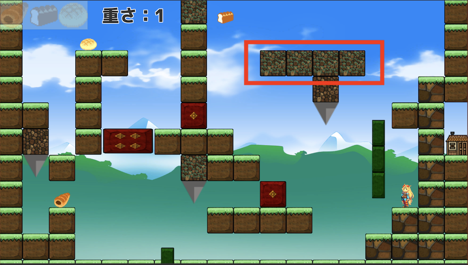

自己流ステージ作成方法
はじめに
初めまして、アプリNaviのヤマグチです。
本日、府大バーチャル学祭開催に合わせ、『巡回！デリバリー屋さん』を
特設ページにて公開させていただきました。遊んで、楽しんでもらえたのなら嬉しいです。
今ゲームは2Dパズルアクションゲームで、ステージ作りにそれなりの時間を割きました。
そこで、前半はステージ作りをするとき僕がどう考えていたかについて、後半はゲーム内に実装したステージを作った時に考えていたことの一部について書きます。
あくまで僕自身の考え方であり他の方のものとは異なります。参考程度に読んでください。
ステージ作成で大切なこと
この項では、僕がステージ作成で気にした方がいいと考えていることを書いていきます
1. ステージに意図を持たせる
皆さんはカードゲームをしたことがありますか。ない場合は武器やパーティをカスタム、編成するゲームを考えてください。カードゲームにおいて、何が一番いる能力だと思いますか。
プレイング、読み、運、色々あると思います。
僕の答えは構築力です。なぜ構築力なのかは、ここではあまり関係ないので省きますが、構築力が高いデッキはデッキ内のすべてのカードに採用する理由があります。完成された構築には意味のないカードはなく、製作者の意図、意志が反映されます。 限られたデッキ枚数に何を何枚採用するか。
言い換えると、限られたスペースに何をどのくらい配置するか、何かに似てますね。
そうです、ステージ作成です。特に今回のゲームでは、ステージは一画面に収まる量でなくてはダメでした。
そこで、ステージの枠組みをどうするか、設置物をどこに置くか等、それぞれの配置に自分なりの考えを持つことを意識して作成しました。
2. 意味のないものを作る
前項で書いたことに早速矛盾しました。
しかし、意味のないものを作ることも必要です。遊んでくれる方は製作者の意図なんて知ったこっちゃありません。だからこそ、製作者にとっては無意味だとわかり切っているものにも意味があるんじゃないかと深読みしてくれます。 そうすれば、意味のないものを作ったつもりが意味のあるものを作れます。
意図的に意味のないものを作ることでステージ全体に遊び心を与えることができるのです。
3. ギミックの使い方を考える
今回はステージの数が少なく、一つ一つのステージも小さいです。なので、できる限り同じ使い方でギミックを使わないことを気にしました。
同じギミックでも、あるときはプラスの役割で使い、またある時はマイナスの役割で使うというようにギミックをより効果的に使うことを心がけました。
4. 自分が楽しむ
これが一番大切な気がします。
作った人が作ったものに対しての理解が最も深いはずです。その人が楽しめないものを他の人が楽しめるとは思えません。作ったステージを自分自身が楽しめるようになることが望ましいです。 作っている時は、作っているステージが面白いかどうかわからなくなってきます。しかし自分が面白いと思えば、少なくとも世界で誰も楽しめないステージではなくなります。
僕は今回のゲーム内のステージでは僕が作ったステージが一番好きです。
実際に作ったステージの解説
この項では、僕が今回のゲームで作ったステージのちょっとした解説をしようと思います。 
1の意図は、ステージ全体にコンセプトを持たせることです。 2の意味のないものは、どっち周りでもクリアできるという要素です。 3のギミックの使い方は、先ほども挙げた落ちるブロックによるステージの区切りです。 4の自分が楽しむに関しては、作ってる間すごく楽しかったです。コンセプトを思いついてからは非常にスムーズにステージ作成をすることができました。 以上が、僕の作ったステージのちょっとした解説になります。あまり話しすぎても面白くないのでこの辺りで終わります。
この先、ステージ9のネタバレを含みますのでプレイした後に読むことをお勧めします。
以下ステージ9ネタバレ
初めにコンセプトを決めておくことで僕自身の中で方向性がブレないようにしました。このステージ全体のコンセプトは「ステージ一周」でした。その時に右周りでも左回りでもクリアできるようにするということを目標にしました。
ステージ全体を荷物を取るエリアでそれぞれ区分けし、各エリアには入り口と出口を作り、周回方向によって入り口、出口が入れ替わるような配置にしました。
上の画像では、赤枠の示す上から落ちるブロックを擬似的な通行止めとして利用しています。
別に両方から進める必要は全くありません。左回りの時は右回りのギミックは不必要で、右回りの時は左回りのギミックは不必要となります。
ただ、これがあることでこのステージの面白さが出ていると考えています。
他の僕の作ったステージでは、基本的にプレイヤーを倒すためだけのものでした。そこに他の役割である区切りという役割を持たせています。
この使い方はプラスとマイナスの両方の使い方というわけではありませんが、違った使い方をした一例ではあります。
{kind=link}
終わりに
読んでいただきありがとうございました。
まさかブログまで書くことになると思っていませんでしたが、ゲームも含めてまあ良いものになったんじゃないかなあと思っています。
最後に、ゲームを遊んでいただいた方、このブログを読んでいただいた方ありがとうございました。それではまた何かの機会に。
ヤマグチ
頼み事を最初に聞く係です。